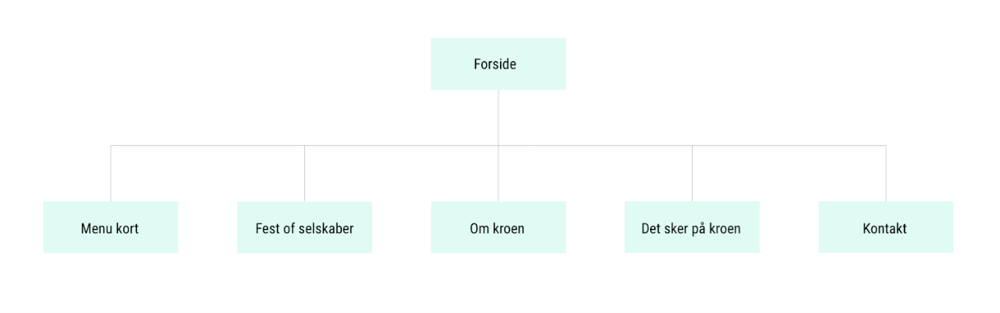
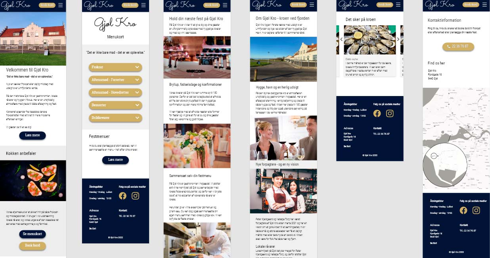
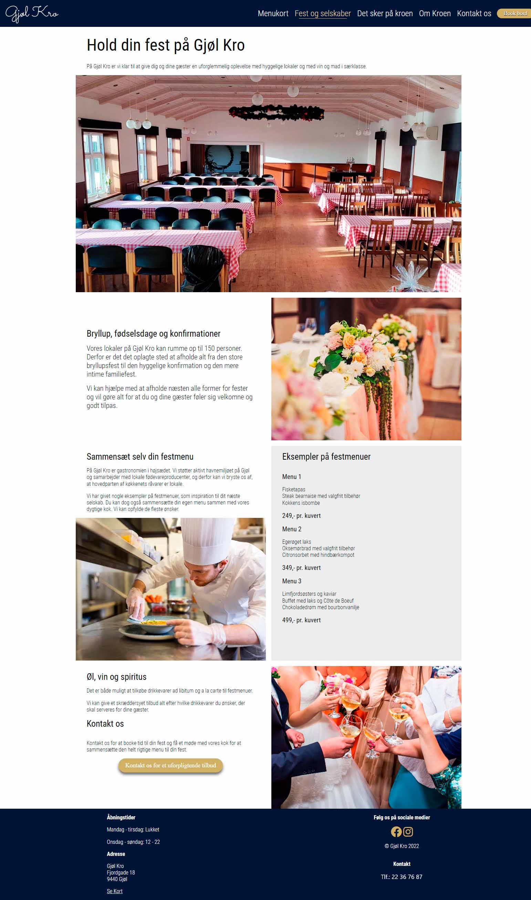

Gjøl Kro hjemmeside
Gjøl Kro er et spisested som specialisere sig i fine-dining med et hint af krostemning. Med en udsigt ud til fjorden er spisestedet et samlingspunkt for byen, såvel som turister.
Casebeskrivelse
Projektet var del af en eksamen i digitale brugergrænseflader. I et samarbejde mellem UCN og Gjøl Kro blev eleverne bedt om at udvikle en ny hjemmeside for de nye forpagtere. Gjøl Kro havde på daværende tidspunkt ikke nogen hjemmeside. Det var en udfordring, fordi potentielle og nuværende brugere kunne have svært ved at få overblik over, hvad kroen kunne tilbyde dem, især hvad angik selskaber og restaurantbesøg.
Gjøl by har et rigt havnemiljø og kroen er en stor del af dette. Ligeledes er byen et velbefærdet sted for turister. Det blev et fokuspunkt i designprocessen at få dette illustreret i løsningsforslaget.
Designprocessen
Som en del af det udleverede materiale, fik vi et kreativt brief. Med udgangspunkt i dette blev farvetema og typografi valgt.
Den indledende informationsarkitektur fulgte en flad struktur, baseret på en forside med pointers til de forskellige undersider.
Mockups og Prototyping
En del af designprocessen var at udarbejde et meningsfuldt layout, baseret på brugerundersøgelser. Da projektet byggede på en mobile first approach, skulle placering af indholdet give mening i den brugskontekst.

Gennem en iterativ proces, med ændringer til layout og indhold blev mockup klar til næste trin: en opskalering af fidelity.
Funktionelle elementer som hero video, knapper og accordions blev især prioriteret i opskaleringen, da dette er interaktive elementer for brugeren. Interaktionen skal give mening og passe til brugernes forventninger. Under prototype udviklingen blev brugerundersøgelser derfor indarbejdet ved større milepæle.
Som en del af den løbende opskalering skulle desktop versionen af hjemmesiden også udarbejdes. Den gennemgik en lignende designproces som ved mobilen, men udnyttede også de nye muligheder en større skræmstørrelse bringer.
Realisering
Løsningen blev bygget med HTML, CSS og JS. Med udgangspunkt i en mobile first approach blev breakpoints for skræmstørrelser løst via @media queries. Realiseringen var ligeledes en iterativ proces. Nogle elementer blev erstatet eller redesigned under kodningen.
Takeaways
Mit primære fokus under dette projekt har været, at skabe sammenhæng mellem design og realisering. En stor del af realiseringen blev udarbejdet ved brug af CSS properties som Grid og Flexbox, for at skabe et sammenhængende layout der samtidig var fleksibelt nok til flere skærmstørrelser og flere undersider. Et sammenhængende layout på tværs af hjemmesiden blev opnået, dels ved brug af utility classes som set i moderne pre-processers som SaSS eller Tailwind. Disse kunne blive inkorporeret med fordel.